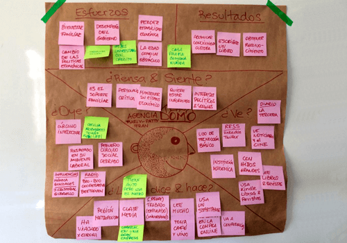
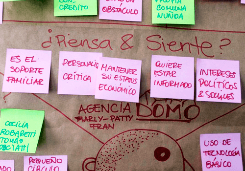
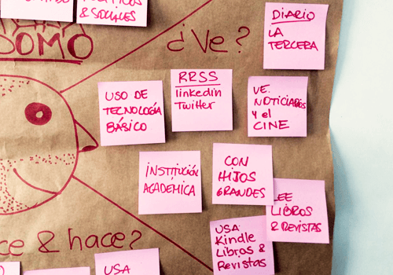
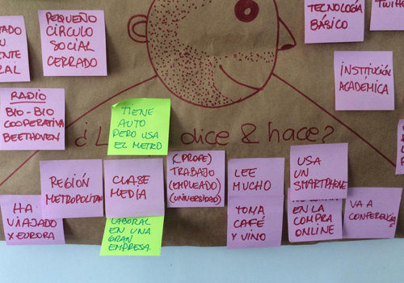
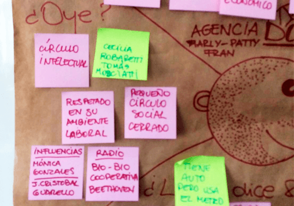
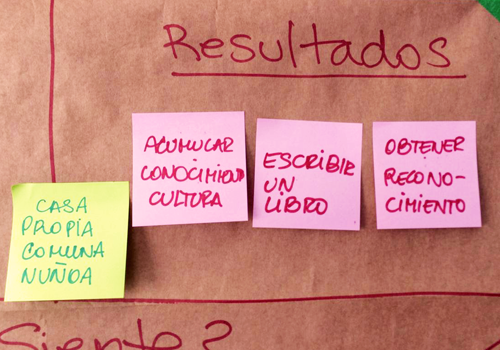
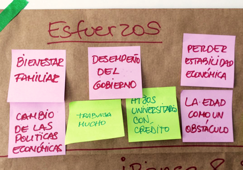

Lo que piensa y siente
Proyecto:
“Crear mediante el mapa de empatía, una persona coherente, creíble y acorde al perfilamiento del documento de base”.
Cliente:
Desafío Latam – Asignación académica del curso Diseño UX/UI.
Rol:
Diseñador UX.
Fecha:
Febrero 2020.
Descripción:
“En el contexto de una investigación para un prestigioso medio
de comunicación online, se ha realizado una masiva encuesta por
Internet y varias sesiones de entrevistas con usuarios, lo que
ha generado un informe inicial de estudio. Es necesario ahora
afinar los perfiles de usuarios para finalizar la presentación y
mostrar los resultados al cliente”.
Con esta premisa, se inició el desafío de crear un mapa de
empatía y un arquetipo, tomando en cuenta los datos que se
facilitaron de un estudio previo. Así se pudo crear la
definición de: Low Users, Medium Users y Heavy Users.
El equipo debió centrarse en realizar el mapa de empatía y
arquetipo, teniendo en cuenta los datos que describían a los
Heavy Users. Así que junto a mis compañeras Francisca y Marly,
participé en la discusión y aprobación de todos los aspectos que
del proceso.
Investigación del usuario - Datos del estudio previo
Metodología de estudio:
Encuesta
Tipo:
Encuesta
Medio:
Online
Período:
Del 16.02.17 al 06.03.17 (18 días)
Respuestas totales:
20.001
Respuestas completas:
11.363
Tamaño de la muestra:
11.363 (respuestas completas)
Margen de error:
1%
Nivel de confianza:
99%
Población de referencia:
12.817.991 (Chilenos entre 20 y 80 años*)
(*) INE: Compendio estadístico 2016.
Metodología de estudio:
Entrevistas
Tipo:
Entrevistas
Medio:
Presencial y Online
Período:
Del 20.03.17 al 05.04.17 (16 días)
Cantidad:
10 entrevistas (6 presenciales y 4 online)
¿Quiénes son sus Heavy Users? Características principales:
- - Peak de edad entre 45 y 65 años (adulto y mayor).
- - 80,4% público masculino.
- - Realiza transacciones vía web y usa redes sociales, pero no es tan activo en la compra online.
- - Visitan mucho el sitio web y lo evalúan con un 6,1 de 10.
Heavy Users
- - Mayor (temas de accesibilidad).
- - Menos cercano a la tecnología.
- - Bajo uso de redes sociales.
- - Conocedor de las temáticas.
- - Capacidad de compra con menor confianza en Internet.
Insights
ENTREVISTADO 1:
“Que la red del servicio pueda ser ampliada a investigaciones a nivel regional y así abarcar y recabar un poco más de informaciones que tienen que ver con las irregularidades en lo político, económico y social de diferentes lugares de Chile. En mi caso, en la quinta región interior (provincias del Marga Marga, Quillota y Petorca, por ejemplo)”.
ENTREVISTADO 2:
“Que adjunten los documentos que enuncian en los reportajes, tendrían más peso”.
ENTREVISTADO 3:
“Que respondan a los ciudadanos que los contactan para hacer denuncias que ameritan investigación periodística”.
ENTREVISTADO 4:
“Aplicación móvil e investigaciones más frecuentes”.
ENTREVISTADO 5:
“Una página web más atractiva. Tal vez una bajada de texto en cada uno de los reportajes, más imágenes. Es muy plana y cansa la vista ver tantas letras”.
ENTREVISTADO 6:
“Que no tuviera financiamiento de privados y fuera realmente independiente”.
ENTREVISTADO 7:
“Libros a menor precio que el de librerías”.
Resultado: Mapa de Empatía

Para crear el arquetipo, iniciamos con un mapa de empatía, tomando en cuenta los resultados de una investigación previa presentada para este ejercicio.


Lo que ve

Lo que dice y hace

Lo que oye

Resultados y ganancias

Esfuerzos y miedos
Resultado: Arquetipo
Nombre: Roberto Fuenzalida.
Edad: 55 años.
Profesión: Es psicólogo y profesor universitario.
Asesor de empresas en materia de selección de personal. Vive en la
RM, comuna Nuñoa, en una casa y tiene un auto de unos 10 años.
Familia: Roberto lleva más de 20 años casado, tiene
dos hijos, uno profesional y una estudiante universitaria.
Intereses: Está interesado constantemente en el
acontecer político y económico del país porque influye en su
trabajo y familia. También le gustan los temas relacionados con la
cultura, el cine, los libros, la gastronomía y los viajes. En su
tiempo libre se reúne con sus amigos a compartir un buen vino y
comentar sobre temas políticos y económicos de la opinión pública;
también de los recorridos que alguna vez realizó en Europa o
América Latina. También le gusta leer los domingos, mientras
disfruta un café después del desayuno.
En su entorno laboral: Roberto es una persona
respetada en su campo, ya que tiene muchos años de experiencia en
asesorías, es por ello que también comparte su jornada laboral con
clases en una universidad, donde se ha convertido en un líder de
opinión.
Sobre tecnología y redes sociales: No es fan de la
tecnología, pero le gusta utilizar su smarthphone como herramienta
para organizar su trabajo y tiene un Kindle porque le gusta leer y
no requiere mayor complejidad para usarlo. Más recientemente, ha
encontrado las bondades de leer y consultar información pertinente
a sus intereses en Internet. Es pasivo en la interacción dentro de
las redes sociales y, ocasionalmente, opina sobre política o algún
tema de su comunidad.
Conoce más casos de estudio
Mapa de empatía y arquetipo
Mapa de empatía